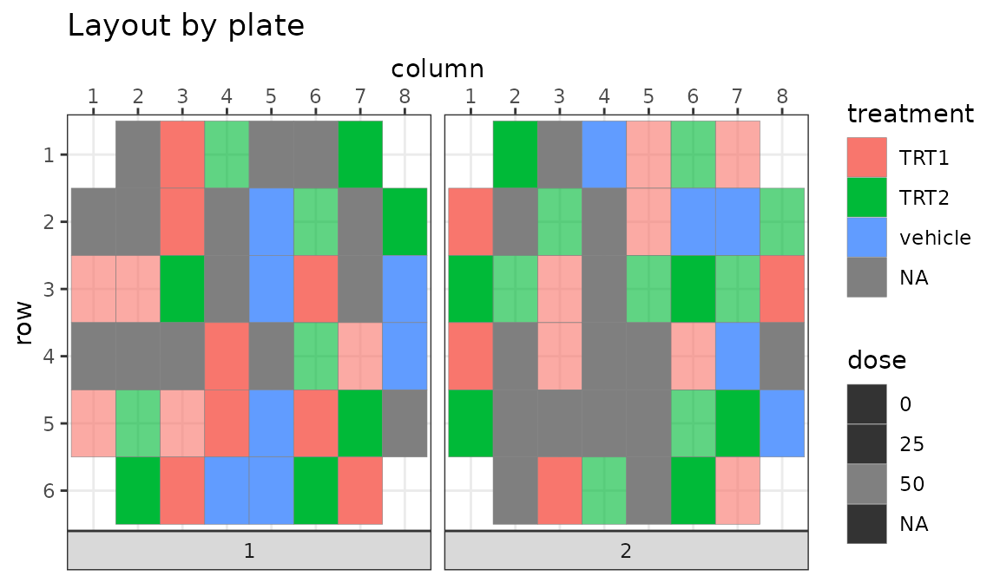
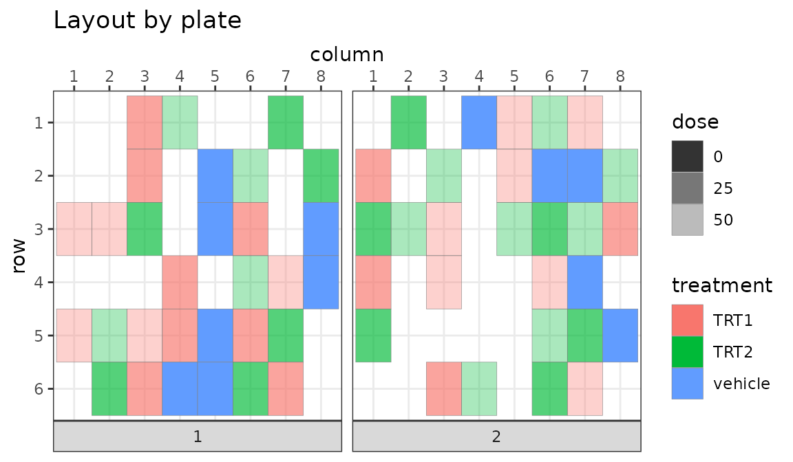
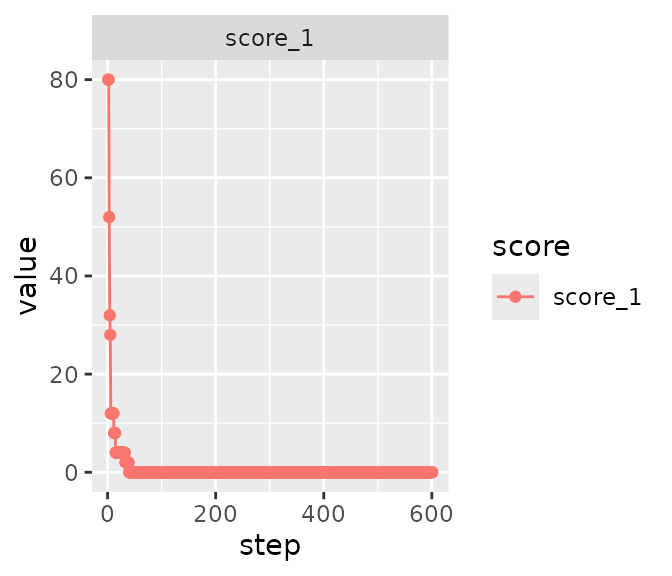
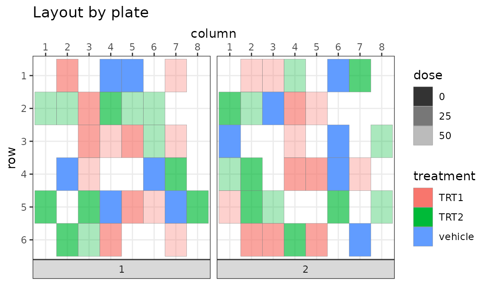
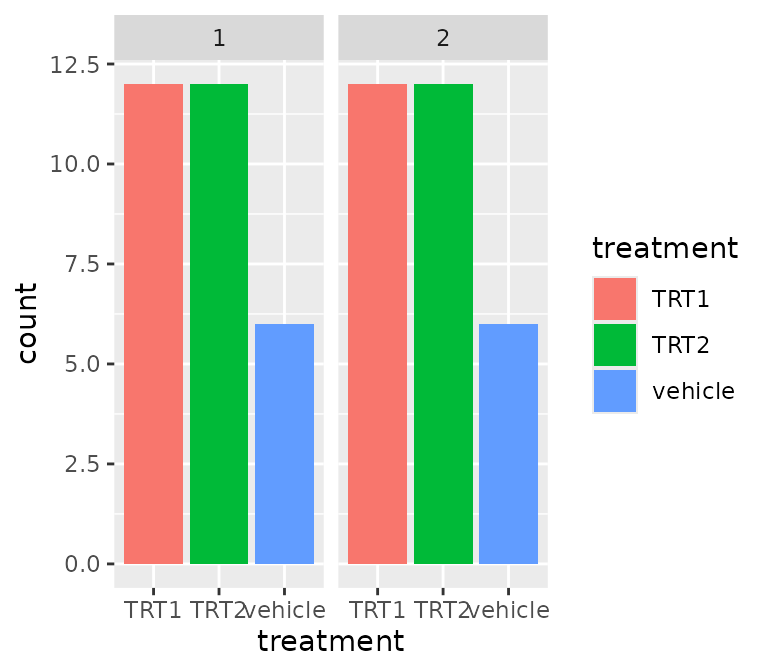
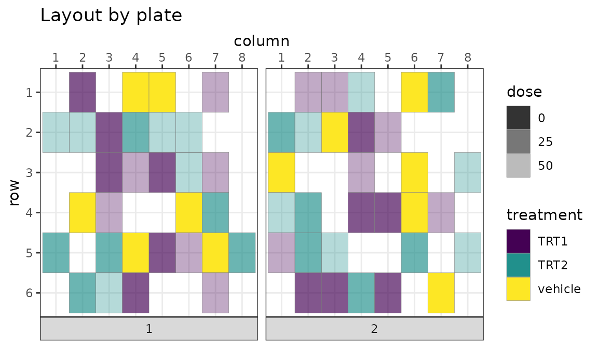
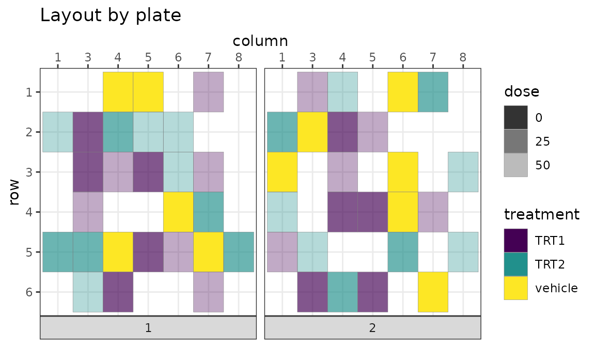

library(designit)
library(ggplot2)
library(dplyr)
#>
#> Attaching package: 'dplyr'
#> The following objects are masked from 'package:stats':
#>
#> filter, lag
#> The following objects are masked from 'package:base':
#>
#> intersect, setdiff, setequal, union
library(tidyr)Samples of a 2-condition in-vivo experiment are to be placed on 48 well plates.
These are the conditions
# conditions to use
conditions <- data.frame(
group = c(1, 2, 3, 4, 5),
treatment = c(
"vehicle", "TRT1", "TRT2",
"TRT1", "TRT2"
),
dose = c(0, 25, 25, 50, 50)
)
gt::gt(conditions)| group | treatment | dose |
|---|---|---|
| 1 | vehicle | 0 |
| 2 | TRT1 | 25 |
| 3 | TRT2 | 25 |
| 4 | TRT1 | 50 |
| 5 | TRT2 | 50 |
We will have 3 animals per groups with 4 replicates each
# sample table (2 animals per group with 3 replicates)
n_reps <- 4
n_animals <- 3
animals <- bind_rows(replicate(n_animals, conditions, simplify = FALSE),
.id = "animal"
)
samples <- bind_rows(replicate(n_reps, animals, simplify = FALSE),
.id = "replicate"
) |>
mutate(
SampleID = paste0(treatment, "_", animal, "_", replicate),
AnimalID = paste0(treatment, "_", animal)
) |>
mutate(dose = factor(dose))
samples |>
head(10) |>
gt::gt()| replicate | animal | group | treatment | dose | SampleID | AnimalID |
|---|---|---|---|---|---|---|
| 1 | 1 | 1 | vehicle | 0 | vehicle_1_1 | vehicle_1 |
| 1 | 1 | 2 | TRT1 | 25 | TRT1_1_1 | TRT1_1 |
| 1 | 1 | 3 | TRT2 | 25 | TRT2_1_1 | TRT2_1 |
| 1 | 1 | 4 | TRT1 | 50 | TRT1_1_1 | TRT1_1 |
| 1 | 1 | 5 | TRT2 | 50 | TRT2_1_1 | TRT2_1 |
| 1 | 2 | 1 | vehicle | 0 | vehicle_2_1 | vehicle_2 |
| 1 | 2 | 2 | TRT1 | 25 | TRT1_2_1 | TRT1_2 |
| 1 | 2 | 3 | TRT2 | 25 | TRT2_2_1 | TRT2_2 |
| 1 | 2 | 4 | TRT1 | 50 | TRT1_2_1 | TRT1_2 |
| 1 | 2 | 5 | TRT2 | 50 | TRT2_2_1 | TRT2_2 |
Corner wells of the plates should be left empty. This means on a 48 well plate we can place 44 samples. Since we have 60 samples, they will fit on 2 plates
Create a BatchContainer object that provides all possible locations
bc <- BatchContainer$new(
dimensions = c("plate" = n_plates, "column" = 8, "row" = 6),
exclude = exclude_wells
)
bc
#> Batch container with 88 locations.
#> Dimensions: plate, column, row
bc$n_locations
#> [1] 88
bc$exclude
#> NULL
bc$get_locations() |> head()
#> # A tibble: 6 × 3
#> plate column row
#> <int> <int> <int>
#> 1 1 1 2
#> 2 1 1 3
#> 3 1 1 4
#> 4 1 1 5
#> 5 1 2 1
#> 6 1 2 2Use random assignment function to place samples to plate locations
bc <- assign_random(bc, samples)
bc$get_samples()
#> # A tibble: 88 × 10
#> plate column row replicate animal group treatment dose SampleID AnimalID
#> <int> <int> <int> <chr> <chr> <dbl> <chr> <fct> <chr> <chr>
#> 1 1 1 2 NA NA NA NA NA NA NA
#> 2 1 1 3 2 1 4 TRT1 50 TRT1_1_2 TRT1_1
#> 3 1 1 4 2 1 3 TRT2 25 TRT2_1_2 TRT2_1
#> 4 1 1 5 2 3 1 vehicle 0 vehicle_3… vehicle…
#> 5 1 2 1 NA NA NA NA NA NA NA
#> 6 1 2 2 NA NA NA NA NA NA NA
#> 7 1 2 3 2 3 2 TRT1 25 TRT1_3_2 TRT1_3
#> 8 1 2 4 2 1 2 TRT1 25 TRT1_1_2 TRT1_1
#> 9 1 2 5 NA NA NA NA NA NA NA
#> 10 1 2 6 2 3 4 TRT1 50 TRT1_3_2 TRT1_3
#> # ℹ 78 more rows
bc$get_samples(remove_empty_locations = TRUE)
#> # A tibble: 60 × 10
#> plate column row replicate animal group treatment dose SampleID AnimalID
#> <int> <int> <int> <chr> <chr> <dbl> <chr> <fct> <chr> <chr>
#> 1 1 1 3 2 1 4 TRT1 50 TRT1_1_2 TRT1_1
#> 2 1 1 4 2 1 3 TRT2 25 TRT2_1_2 TRT2_1
#> 3 1 1 5 2 3 1 vehicle 0 vehicle_3… vehicle…
#> 4 1 2 3 2 3 2 TRT1 25 TRT1_3_2 TRT1_3
#> 5 1 2 4 2 1 2 TRT1 25 TRT1_1_2 TRT1_1
#> 6 1 2 6 2 3 4 TRT1 50 TRT1_3_2 TRT1_3
#> 7 1 3 1 2 3 3 TRT2 25 TRT2_3_2 TRT2_3
#> 8 1 3 3 3 3 3 TRT2 25 TRT2_3_3 TRT2_3
#> 9 1 3 4 4 3 1 vehicle 0 vehicle_3… vehicle…
#> 10 1 3 6 1 3 1 vehicle 0 vehicle_3… vehicle…
#> # ℹ 50 more rowsPlot of the result using the plot_plate function
plot_plate(bc,
plate = plate, column = column, row = row,
.color = treatment, .alpha = dose
) To not show empty wells, we can directly plot the sample table as well
plot_plate(bc$get_samples(remove_empty_locations = TRUE),
plate = plate, column = column, row = row,
.color = treatment, .alpha = dose
)
To move individual samples or manually assigning all locations we can
use the batchContainer$move_samples() method
To swap two or more samples use:
Warning: This will change your BatchContainer in-place.
bc$move_samples(src = c(1L, 2L), dst = c(2L, 1L))
plot_plate(bc$get_samples(remove_empty_locations = TRUE),
plate = plate, column = column, row = row,
.color = treatment, .alpha = dose
)To assign all samples in one go, use the option
location_assignment.
Warning: This will change your BatchContainer in-place.
The example below orders samples by ID and adds the empty locations afterwards
bc$move_samples(
location_assignment = c(
1:nrow(samples),
rep(NA, (bc$n_locations - nrow(samples)))
)
)
plot_plate(bc$get_samples(remove_empty_locations = TRUE, include_id = TRUE),
plate = plate, column = column, row = row,
.color = .sample_id
)The optimization procedure is invoked with
e.g. optimize_design. Here we use a simple shuffling
schedule: swap 10 samples for 100 times, then swap 2 samples for 400
times.
To evaluate how good a layout is, we need a scoring function.
This function will assess how well treatment and dose are balanced across the two plates.
bc <- optimize_design(bc,
scoring = osat_score_generator(
batch_vars = "plate",
feature_vars = c("treatment", "dose")
),
# shuffling schedule
n_shuffle = c(rep(10, 200), rep(2, 400))
)
#> Warning in osat_score(bc, batch_vars = batch_vars, feature_vars = feature_vars,
#> : NAs in features / batch columns; they will be excluded from scoring
#> Checking variances of 1-dim. score vector.
#> ... (231.222) - OK
#> Initial score: 80
#> Achieved score: 62 at iteration 1
#> Achieved score: 58 at iteration 2
#> Achieved score: 46 at iteration 4
#> Achieved score: 38 at iteration 5
#> Achieved score: 24 at iteration 6
#> Achieved score: 22 at iteration 8
#> Achieved score: 14 at iteration 11
#> Achieved score: 6 at iteration 14
#> Achieved score: 2 at iteration 15
#> Achieved score: 0 at iteration 239Development of the score can be viewed with
bc$plot_trace()
The layout after plate batching looks the following
plot_plate(bc$get_samples(remove_empty_locations = TRUE),
plate = plate, column = column, row = row,
.color = treatment, .alpha = dose
)
Looking at treatment, we see it’s evenly distributed across the plates
ggplot(
bc$get_samples(remove_empty_locations = TRUE),
aes(x = treatment, fill = treatment)
) +
geom_bar() +
facet_wrap(~plate)
To properly distinguish between empty and excluded locations one can do the following.
add_excluded = TRUE, set
rename_empty = TRUE
na.value
color_palette <- c(
TRT1 = "blue", TRT2 = "purple",
vehicle = "orange", empty = "white"
)
plot_plate(bc,
plate = plate, column = column, row = row,
.color = treatment, .alpha = dose,
add_excluded = TRUE, rename_empty = TRUE
) +
scale_fill_manual(values = color_palette, na.value = "darkgray")To remove all empty wells from the plot, hand the pruned sample list. to plot_plate rather than the whole BatchContainer. You can still assign your own colors.
plot_plate(bc$get_samples(remove_empty_locations = TRUE),
plate = plate, column = column, row = row,
.color = treatment, .alpha = dose
) +
scale_fill_viridis_d()
Note: removing all empty and excluded wells will lead to omitting completely empty rows or columns!
plot_plate(bc$get_samples(remove_empty_locations = TRUE) |>
filter(column != 2),
plate = plate, column = column, row = row,
.color = treatment, .alpha = dose
) +
scale_fill_viridis_d()